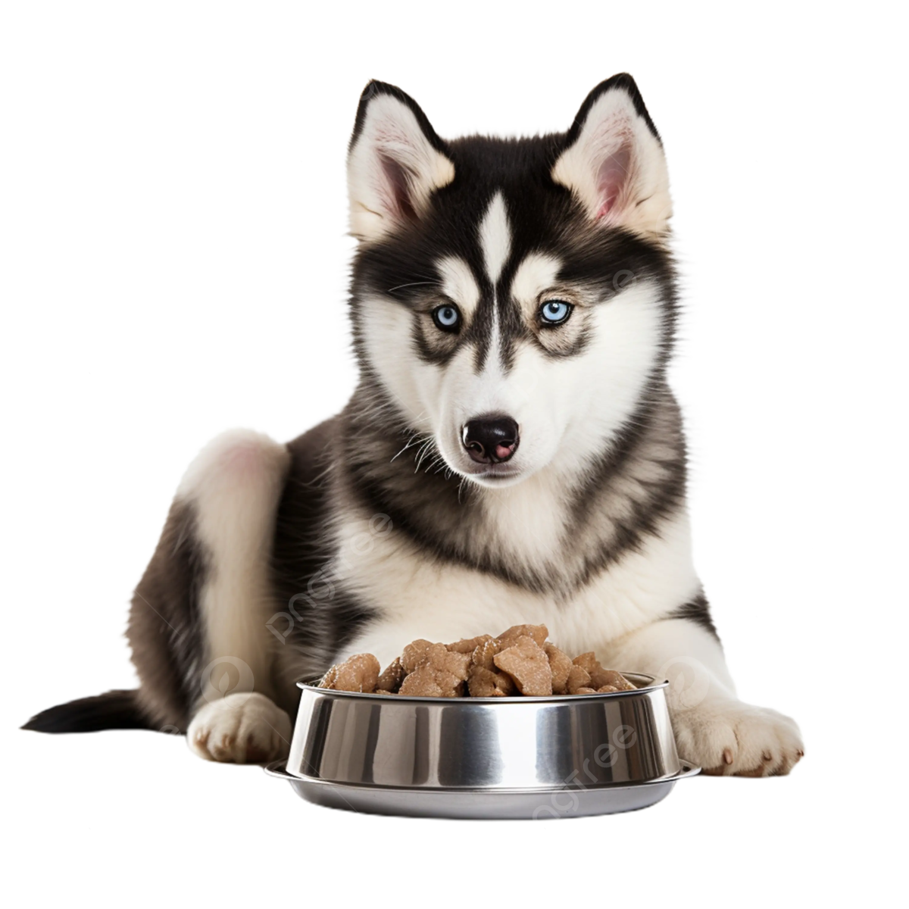
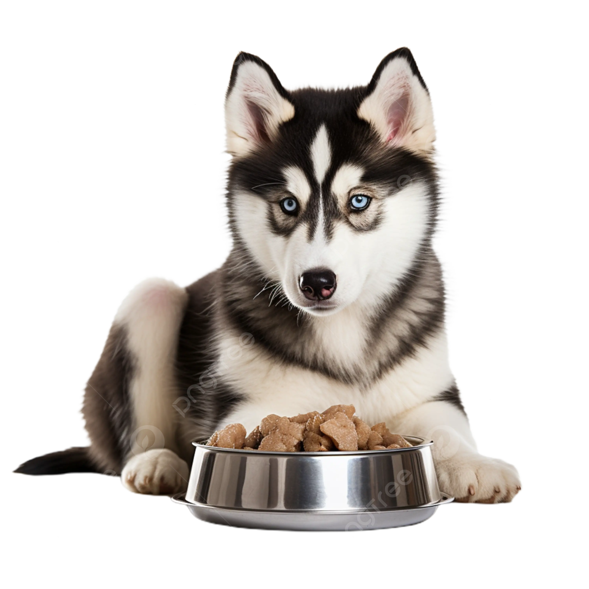

Registrate
sugerencias
Donaciones
Inicio
Facebook


@Somomax_Huskies
10 Sorprendentes Datos Curiosos sobre los Huskies que no Conocías
Este sitio esta hecho para entretener y informar sobre el animal
especifico “Huskie” reunimos los datos que podrian hacer que
rescates y adoptes a unos de estos cachorros de raza “Huskie”.
Disfruta de nuestra pagina
Para su informacion
 Instagram
Instagram


 
